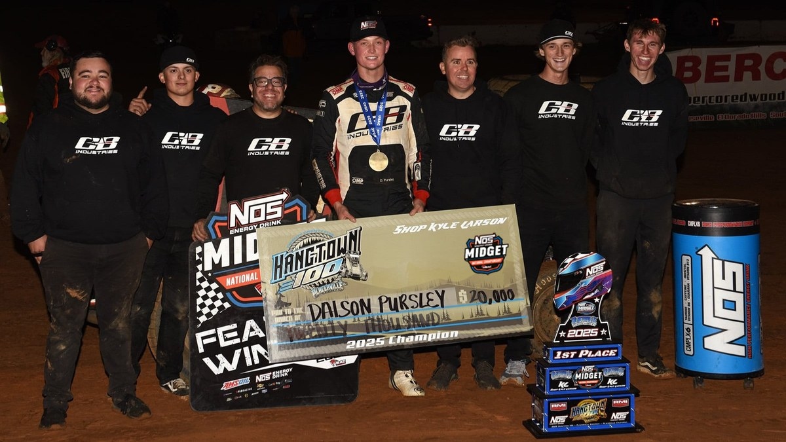
Storms Cancel Hangtown 100 at Placerville; USAC Midgets Resume Nov. 18 at Plaza Park
Officials called off both nights, Nov. 13-14, because of a forecast for heavy rain. Refunds are automatic, and the cancellation ends Placerville’s 2026 season. Sources: TJ Slideways; USAC.
Read the story →File photo: Matt Sublett / USAC
Latest racing news
Archive →USCS Cancels 30th Anniversary Finale at Talladega Short Track
Both nights of the scheduled Nov. 13-14 championship weekend are listed as canceled. No makeup date has been posted. Sources: USCS; Talladega Short Track.
November 13, 2026 Race results · Sprint Car Challenge TourD.J. Netto Wins Tribute to Gary Patterson; Justyn Cox Claims Second SCCT Title
Netto started second and won the Nov. 7 finale at Stockton. Cox finished third to wrap up his second tour championship. Sources: Sprint Car Challenge Tour; SPEED SPORT.
November 13, 2026 Schedule · World of Outlaws
Schedule · World of Outlaws
World of Outlaws Set Eight 2027 Pennsylvania Dates, Opening May 12 at Lincoln
The series will race at Lincoln, Williams Grove and BAPS, ending with the 65th National Open Oct. 1-2. Source: World of Outlaws; photo: Tyler Carr / World of Outlaws.
November 13, 2026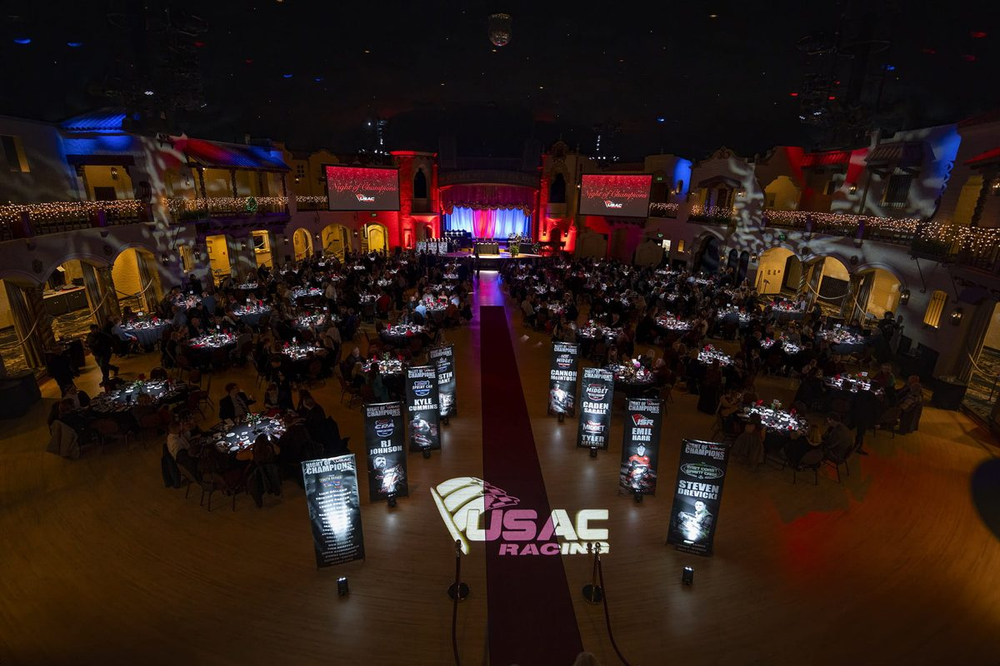
Awards · USACUSAC Night of Champions Set for Dec. 11 in Indianapolis
The 71st banquet at the Indiana Roof Ballroom will honor USAC’s 2026 champions. Tickets are $75; RSVP by Dec. 4. Source: USAC Media; photo: Dave Olson / USAC.
November 13, 2026 Breaking · USAC Midgets · Top storyStorms Cancel Hangtown 100 at Placerville; USAC Midgets Resume Nov. 18 at Plaza Park
Officials called off both nights, Nov. 13-14, because of a forecast for heavy rain. Refunds are automatic. Sources: TJ Slideways; USAC.
November 12, 2026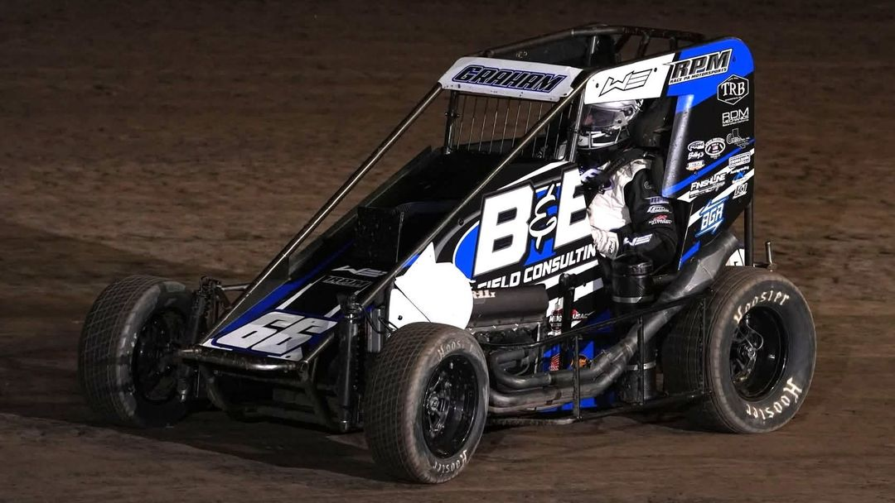
Championship · USAC Western States MidgetsBroedy Graham Wins 2026 USAC Western States Midget Championship
Graham won his first series title by 31 points after Drake Cardey spun two laps from the end of the Ventura finale. He also won the Billy’s Tequila Cup. Source: USAC Media; photo: USAC.
November 12, 2026 Driver news · USAC MidgetsIndyCar Winner Christian Rasmussen to Make USAC Midget Debut at Turkey Night
Rasmussen will drive the Cofer/Esslinger No. 98 Agajanian Special in the 85th Turkey Night Grand Prix on Nov. 28 at Ventura. Sources: USAC; SPEED SPORT; RACER.
November 12, 2026 Schedule · USAC MidgetsJacob Denney Leads USAC National Midgets Into Five-Race California Finish
The Hangtown 100 cancellation leaves five races, starting Nov. 18 at Plaza Park Raceway. Denney leads Kevin Thomas Jr. by 73 points. Source: USAC.
November 12, 2026 Preview · Australia · Wing sprint carsAustralian Sprintcar Championship Heads to Toowoomba Nov. 20-21
The 64th Nutrend Homes Australian title is at Toowoomba for the first time in 50 years, with a prelude Nov. 18 and a Nov. 22 rain date. Sources: Toowoomba Speedway; Clay-Per-View.
November 12, 2026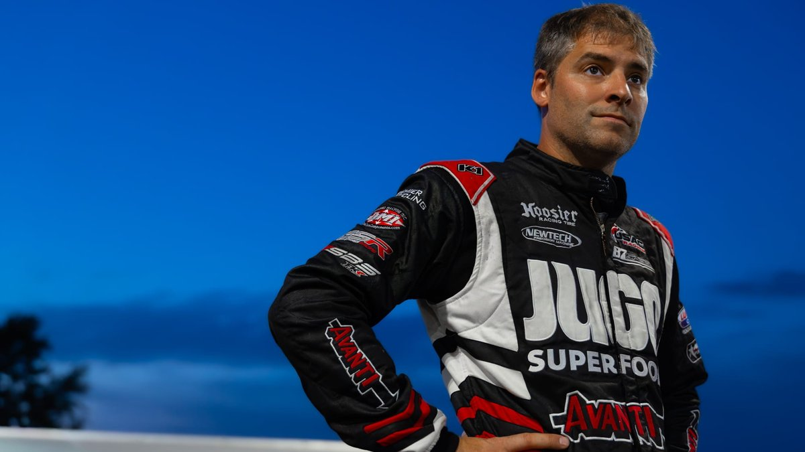
Championship · USAC National Sprint Cars · Non-wingKyle Cummins Wins Second Straight USAC National Sprint Car Title
Cummins clinched Oct. 22 at Central Arizona with two races left, won a career-high 11 features and beat Justin Grant by 183 points. Source: USAC; photo: Josh James Artwork / USAC.
November 12, 2026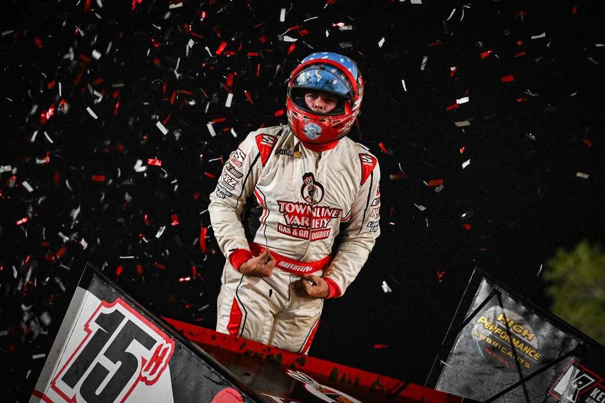
Championship · ASCS National TourSam Hafertepe Jr. Wins Record Seventh ASCS National Tour Title
Hafertepe clinched Oct. 17 by winning the Creek County finale with a last-lap pass and beat Matt Covington by 41 points. He later announced he will join Jess Jordan Motorsports in 2027 for selected World of Outlaws and High Limit 410 starts. Sources: ASCS; Jess Jordan Motorsports press release (Oct. 20); photo: Emily Schwanke / ASCS.
November 12, 2026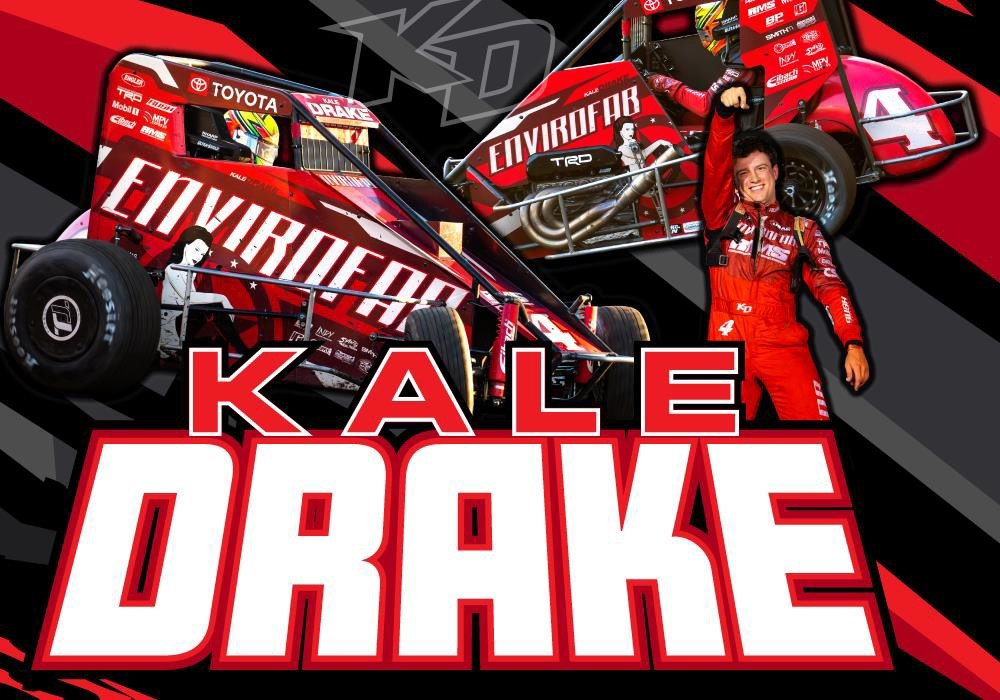
Championship · POWRi National MidgetsKale Drake Wins 2026 POWRi National Midget League Championship
Drake clinched his first national midget title for RMS Racing at I-44 Speedway in October and beat Karter Sarff by 310 points. Sources: POWRi; Toyota Racing; SPEED SPORT; image: POWRi.
November 12, 2026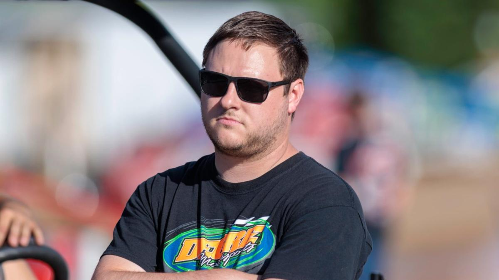
Championship · USAC East Coast · Non-wingSteven Drevicki Wins Sixth USAC East Coast Sprint Car Title
Drevicki claimed his record-extending sixth title by 28 points over Christian Bruno, the closest race in series history. Sources: USAC press release by Richie Murray; photo: Rich Forman / USAC.
November 10, 2026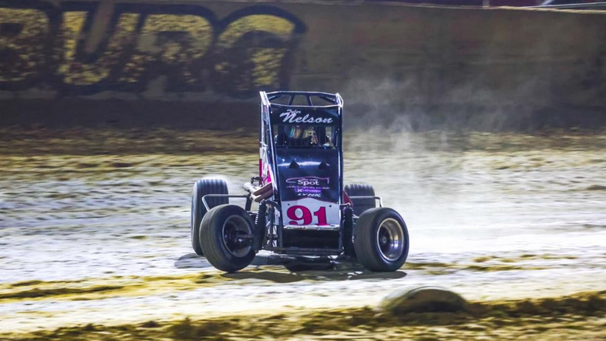
Championship · USAC Midwest Thunder · MidgetsTyler Nelson Repeats as USAC Midwest Thunder SpeeD2 Midget Champion
Nelson won three features and finished 40 points ahead of Bryce Massingill in the 13-race series. Sources: USAC press release by Richie Murray; photo: Zach Hensley / USAC.
November 10, 2026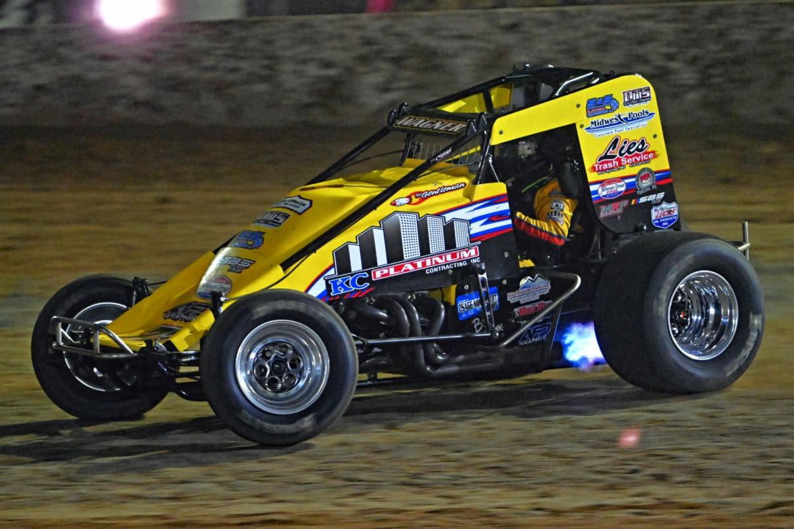
Championship · USAC MRA · Non-wingJack Wagner Wins 2026 USAC Wholesale Batteries MRA Sprint Car Title
Wagner won seven of 12 starts in the No. 77 and finished 125 points ahead of Chase Howard. Sources: USAC press release by Ray Cunningham; photo: John Lee / USAC.
November 10, 2026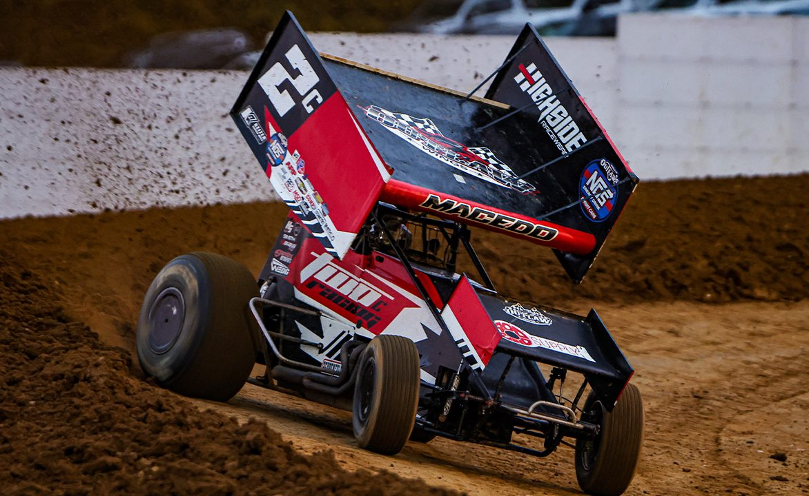
Driver news · World of OutlawsCole Macedo Returning to TwoC Racing for Third World of Outlaws Season in 2027
Macedo will drive the TwoC Racing No. 2C again in 2027. World of Outlaws statistics credit him with eight top fives and 29 top 10s in 74 starts in 2026. Sources: sprintcarunlimited.com; World of Outlaws.
November 10, 2026 Championship · WA SprintcarsDayne Kingshott Wins WA Sprintcar Title at Bunbury
Kingshott led all 35 laps from second at Bunbury Speedway on Nov. 7 for his second WA title and Krikke Motorsport’s ninth. Sources: Krikke Motorsport; Auto Action.
November 10, 2026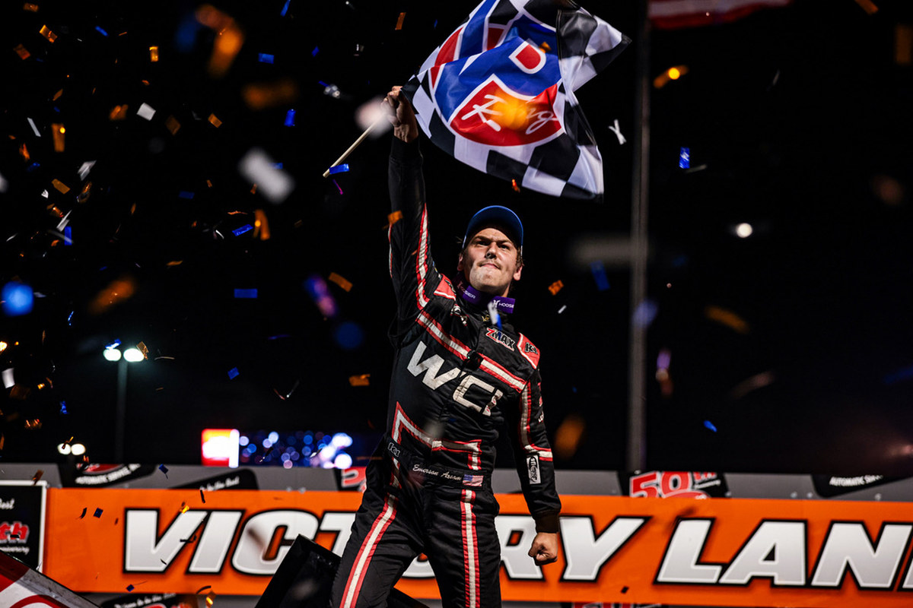
Driver feature · World of OutlawsEmerson Axsom Follows Chili Bowl Win With World of Outlaws Rookie of the Year Title
Axsom won the Chili Bowl Nationals in January, took his first World of Outlaws feature in September at Huset’s and was named Kevin Gobrecht Rookie of the Year after the World Finals. Sources: World of Outlaws; Chili Bowl Nationals.
November 10, 2026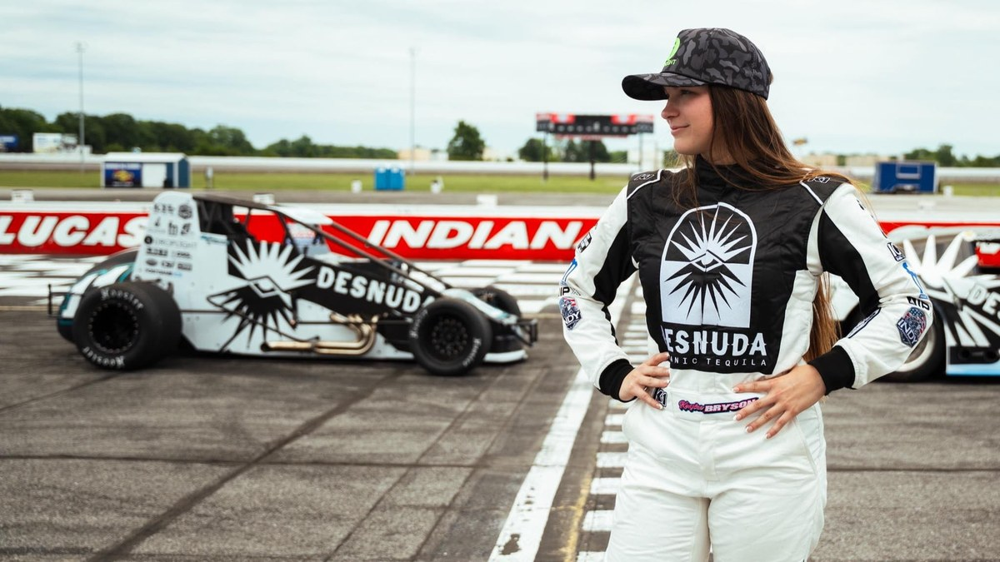
Driver change · USAC Silver CrownKaylee Bryson Out at Abacus; Team Says It Will Be Back in 2027
Bryson said she was told Monday she would not continue with Abacus Racing. The team thanked Seavey for four years and said it will be back in 2027. Sources: Kaylee Bryson; Abacus Racing.
November 9, 2026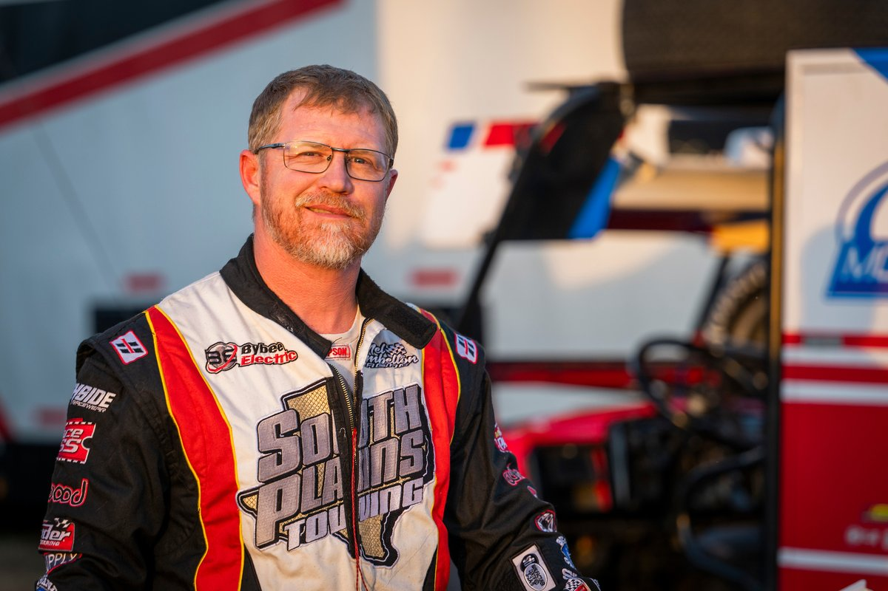
Driver news · ASCS · 360 Sprint CarsJason Martin Healthy and Open to Driving or Crew Roles After DJ Bybee Steps Back
Martin says he is fully recovered after sitting out 2026 and open to driving, crew, or team opportunities. BM Motorsports is not closing. Sources: BM Motorsports; ASCS Racing.
November 9, 2026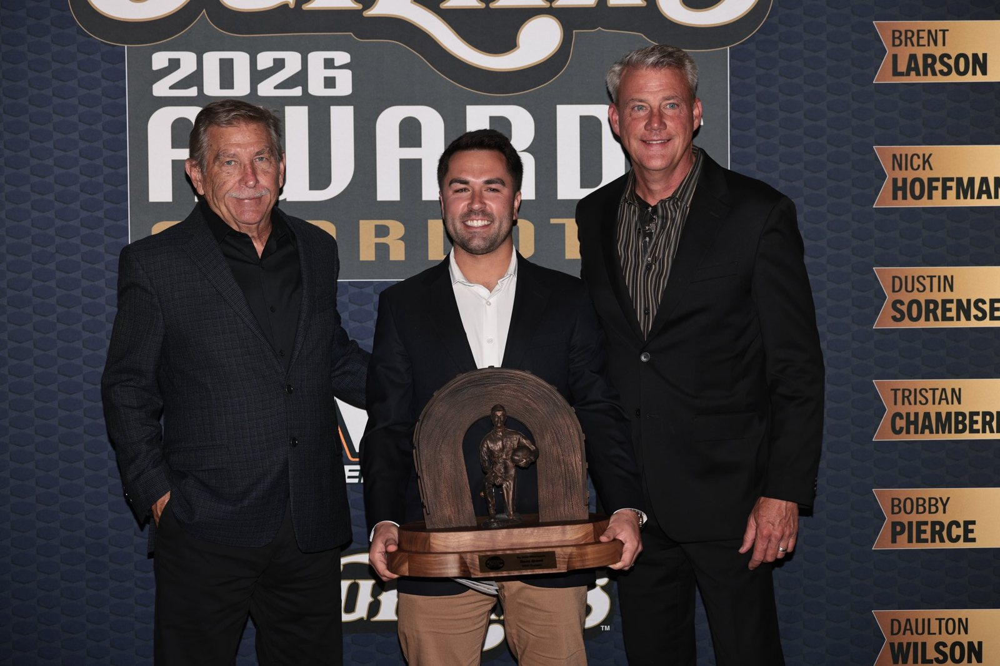
Awards · World of OutlawsGravel Honored for Third Straight Title, Kyle Ripper Earns Two Awards at World of Outlaws Banquet
Ripper took Crew Chief of the Year and the Eloy Gutierrez Spirit Award. Haudenschild was Most Popular Driver, Axsom Rookie of the Year, and Johnny Gibson received the Ted Johnson Award. Source: World of Outlaws.
November 9, 2026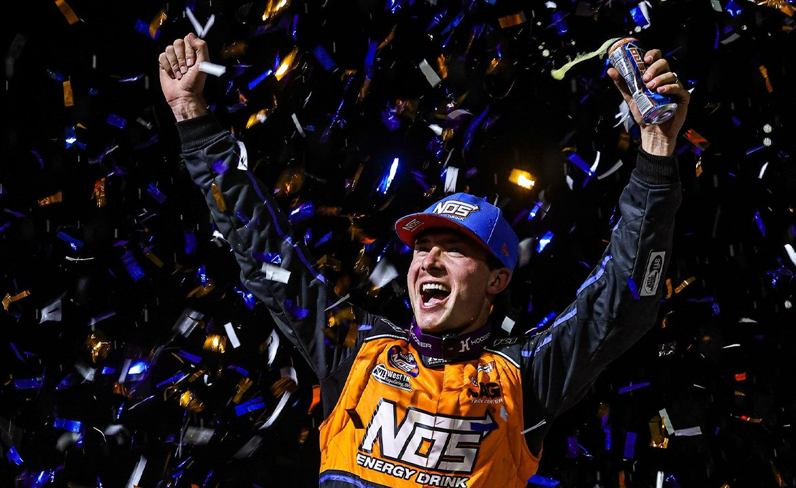
Driver news · World of OutlawsSpencer Bayston Returning to Stenhouse Jr./Marshall Racing for 2027
Bayston confirmed during the World Finals that he will drive the No. 17 again in 2027 and called 2026 “a rebuilding year.” Sources: Jacob Seelman (SWN); World of Outlaws.
November 9, 2026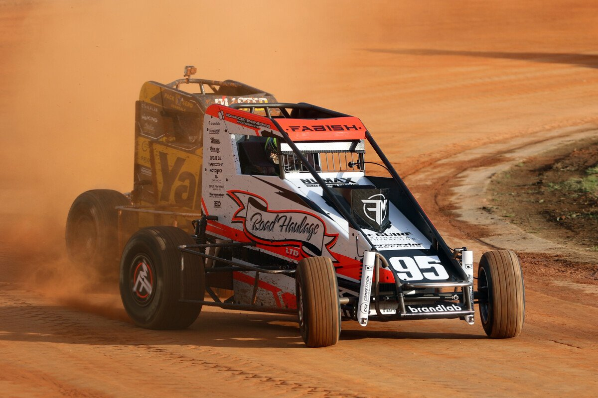
Race results · New Zealand MidgetsMitch Fabish Wins Third Straight Baypark Midget Feature
Fabish won the Easysteel Bill Buckley Classic at Baypark Speedway by 0.608 seconds over Alec Insley, his third straight midget feature win to open the New Zealand season. Sources: SunLive; VelocityNews.
November 9, 2026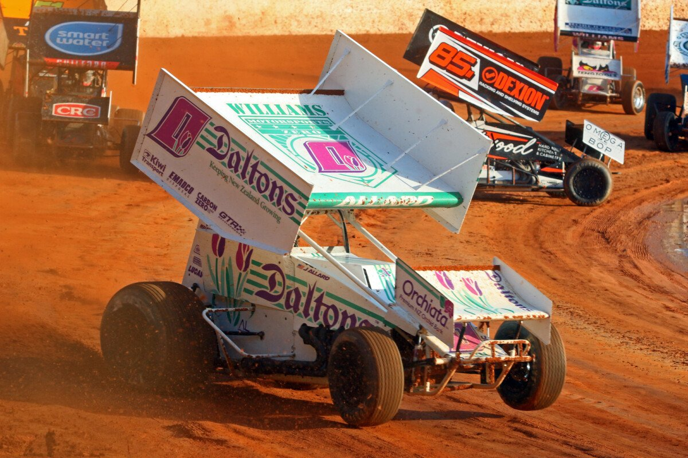
Race results · New Zealand Sprint CarsJonathan Allard Wins Second Baypark Sprint Car Feature of the Season
Allard led all 20 laps at Baypark Speedway and held off Ryan O’Connor by 0.643 seconds for his second Sprint Car win of the young season. Sources: SunLive; VelocityNews.
November 9, 2026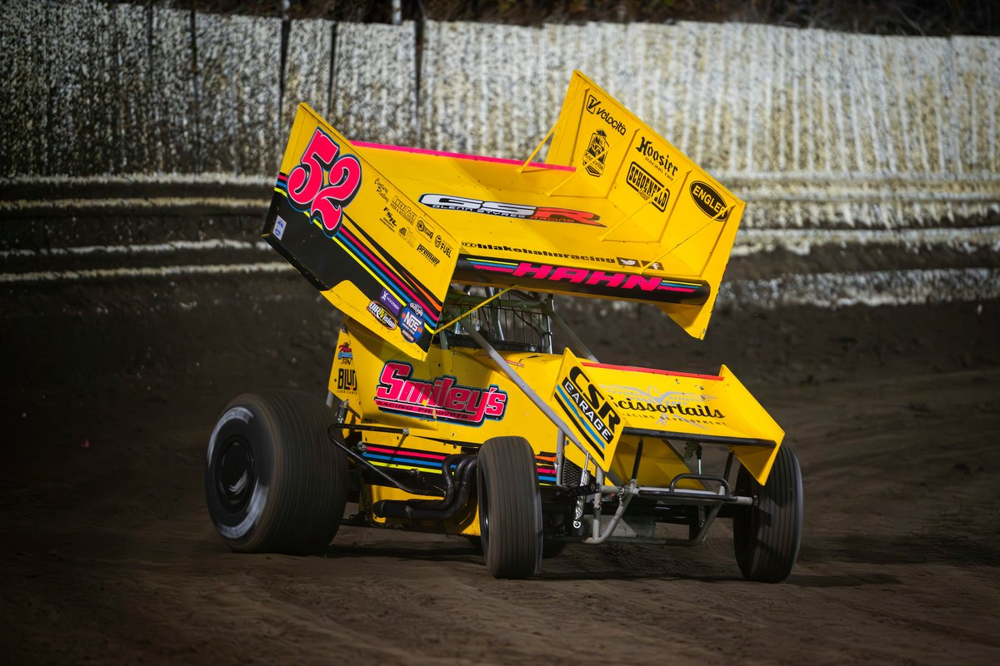
Race results · POWRi 410Blake Hahn Wins POWRi 410 Season Finale at Texas Motor Speedway
Hahn led all 25 laps from the pole on Nov. 7 at Texas Motor Speedway Dirt Track for his first POWRi 410 win. Austin McCarl finished second, Rees Moran third. Sources: SPEED SPORT; STLRacing.com.
November 8, 2026 Weekly previewThis week: USAC National Midgets open the Golden State Invasion at the Hangtown 100
Update, Nov. 12: the Hangtown 100 at Placerville was canceled because of forecast storms. The preview also covers a $10,000-to-win 410 show at BAPS and the Australia and New Zealand seasons.
November 8, 2026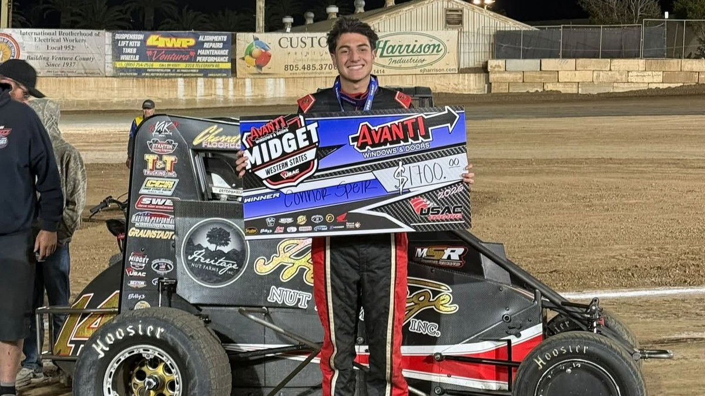
Race results · USAC Western States MidgetsSpeir Scores First Win, Graham Clinches First Title in Ventura USAC WS Midget Finale
Connor Speir led all 25 laps from the pole for his first USAC Western States Midget win at Ventura. Broedy Graham finished fourth to lock up his first series championship. Source: SC Motorsports Media / Richie Murray – USAC Media.
November 8, 2026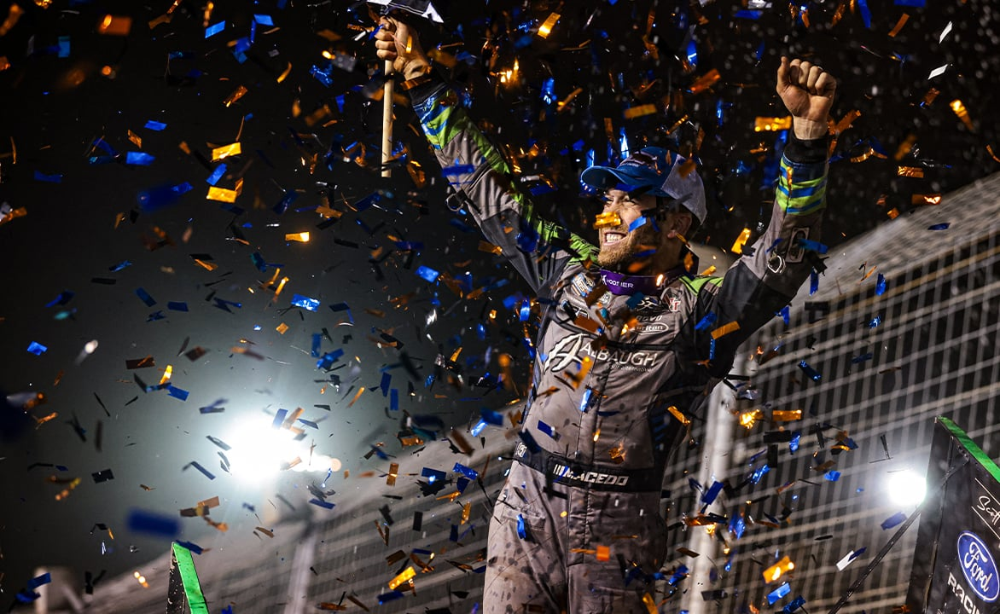
Race results · World of Outlaws · Just inCarson Macedo Wins Saturday World Finals Finale at Charlotte
Macedo charged from eighth to win the $25,000 season finale over Michael Kofoid and Giovanni Scelzi. David Gravel is the 2026 champion. Source: World of Outlaws / Racing News.
November 8, 2026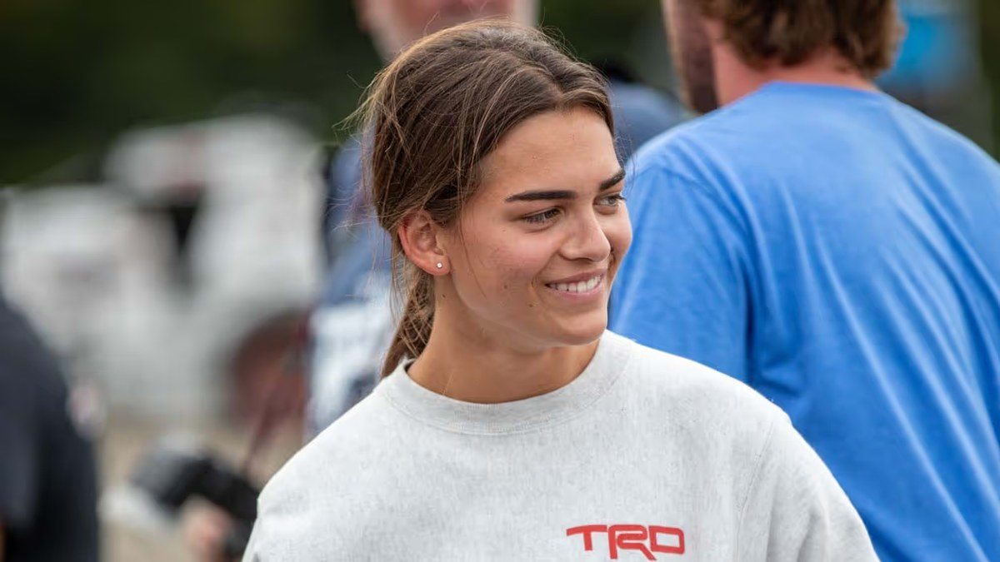
Driver news · USAC MidgetsJade Avedisian Returns to USAC Midget Racing Out West
Avedisian returns for select Golden State Invasion events after an injury sidelined her following the 2024 BC39. Source: FloRacing / USAC.
November 8, 2026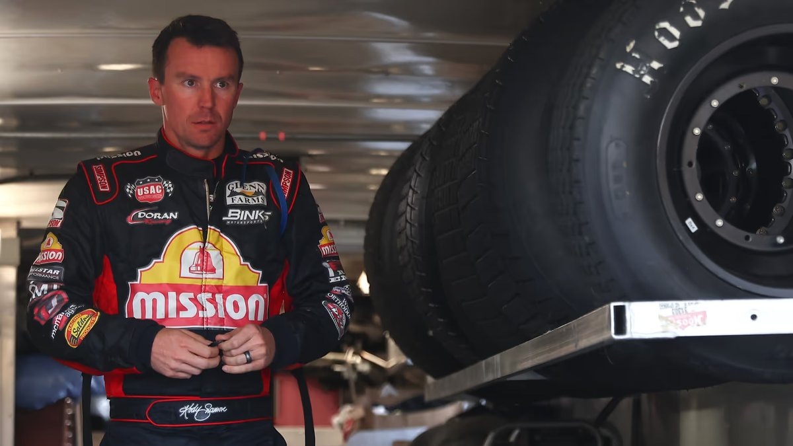
Race results · Non-wingKody Swanson Wins Non-Winged Feature at Open Wheel Showdown
Swanson won the $10,000 inaugural non-winged sprint car feature at the Bullring at Las Vegas. Source: SPEED SPORT.
November 8, 2026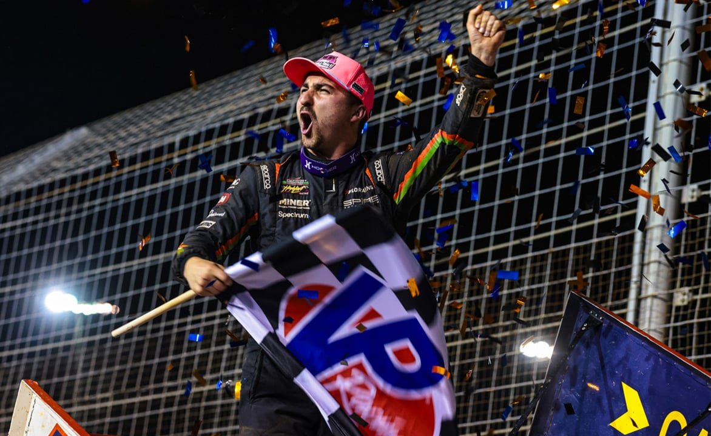
Race results · World of OutlawsGiovanni Scelzi Wins Friday World Finals Feature at Charlotte
Scelzi passed Sheldon Haudenschild on the opening lap and led every lap of the 25-lap feature. Tanner Holmes finished second. Source: SPEED SPORT / World of Outlaws.
November 7, 2026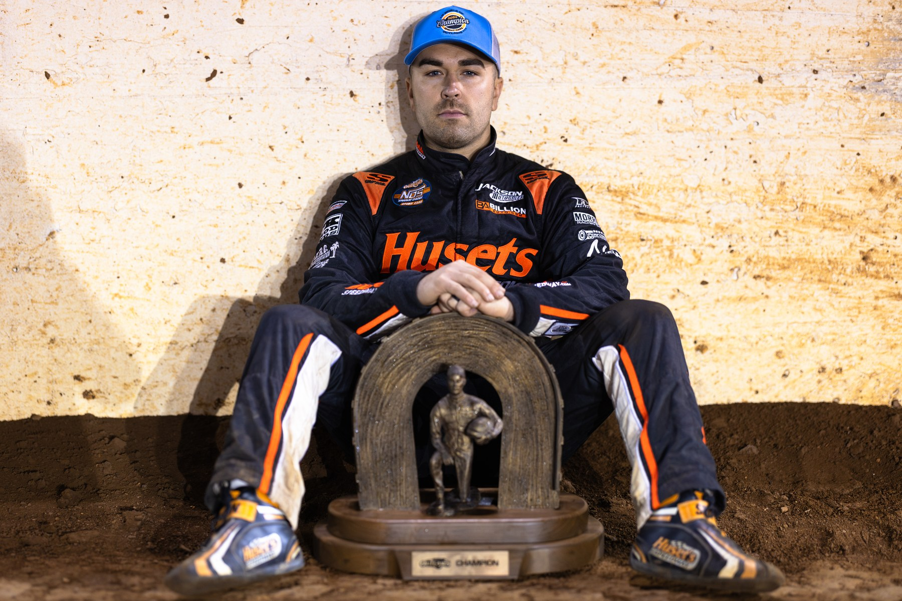
Championship · World of OutlawsDavid Gravel Clinches Third Straight World of Outlaws Championship
Gravel’s sixth-place finish Thursday at Charlotte locked up the title. He ties Sammy Swindell for fourth-most series championships. Sources: World of Outlaws, Always Race Day, SWN.
November 6, 2026 Team news · USACKyle Cummins Seeking Ownership Partners for 2027 USAC Return
Cummins is pursuing ownership and partnership options to keep the championship-winning team together for 2027 after Jerry and Bev Petty step back from the national program. Source: Kyle Cummins Racing.
November 6, 2026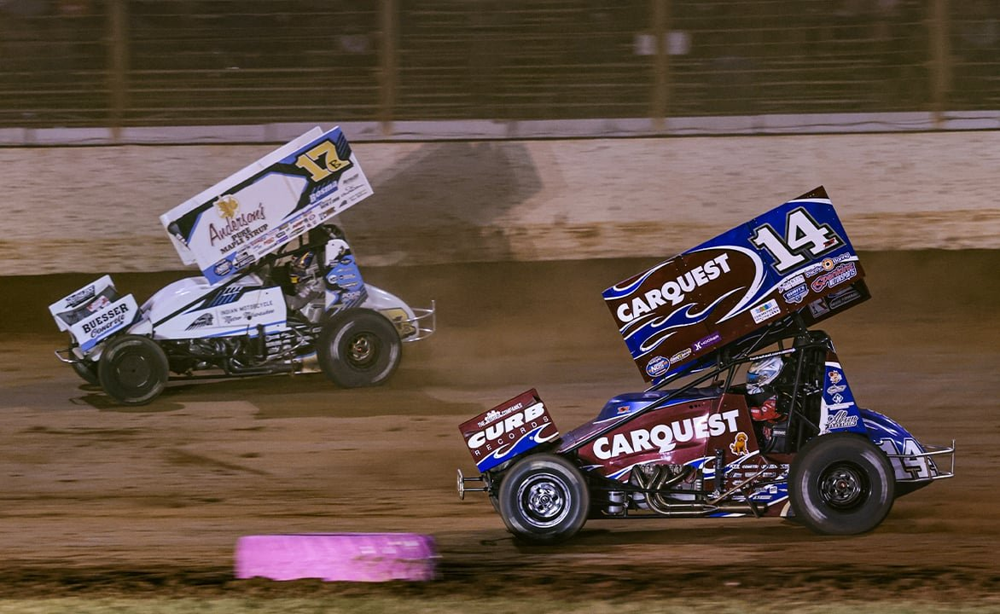
Race results · World of OutlawsRico Abreu Wins Thursday World Finals Feature at Charlotte
Abreu started third and won Thursday’s 25-lap World Finals feature over Tyler Courtney and Bill Balog. Abreu passed race leader Balog with fewer than five laps left. Source: World of Outlaws.
November 5, 2026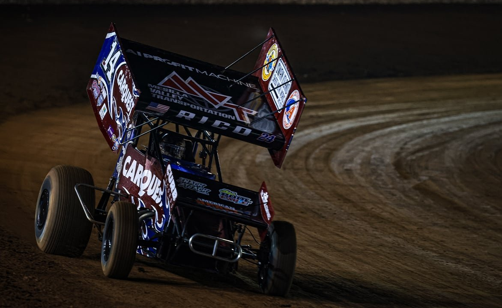
Qualifying · World of OutlawsRico Abreu Sweeps World Finals Qualifying Night at Charlotte
Abreu set overall Simpson Quick Time for Thursday (12.584) and Friday (12.542) heat lineups Wednesday at The Dirt Track at Charlotte. Source: World of Outlaws.
November 5, 2026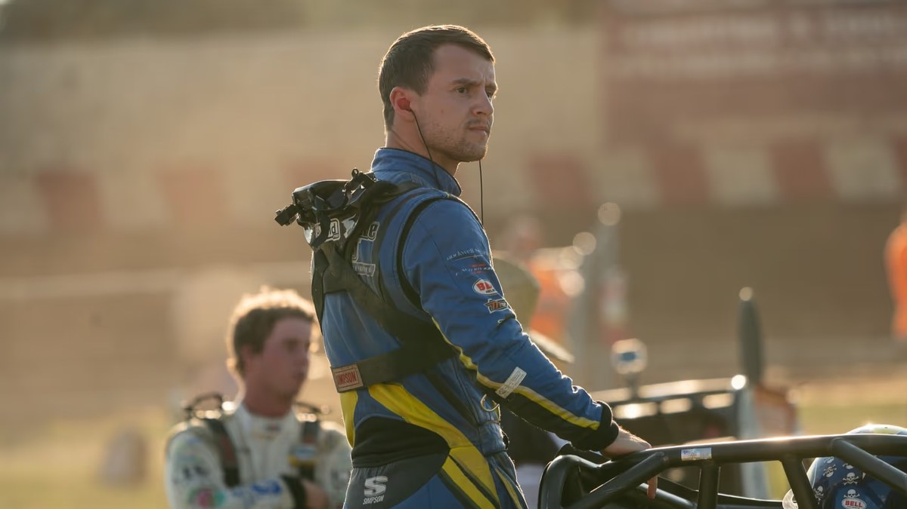
Driver changeLogan Seavey and Abacus Racing Part Ways
Seavey stepped away from Abacus Racing effective immediately after four years together and has no 2027 plans in place yet. Source: Logan Seavey Racing.
November 4, 2026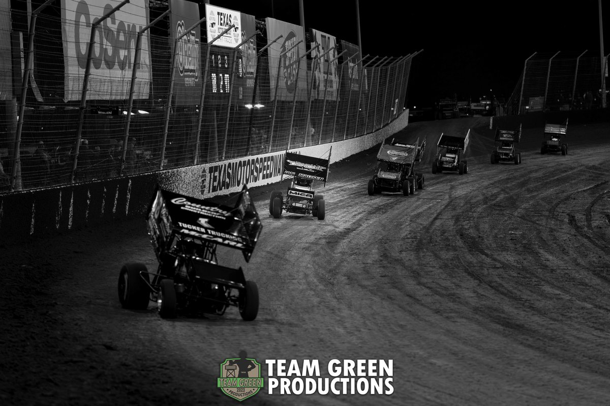
Preview · POWRi 410POWRi 410 Sprints Close 2026 Season at Texas Motor Speedway Dirt Track
The Deuces Wild Championships runs Nov. 5-7 in Fort Worth, paying $5,000 and $7,000 to win, with the POWRi 410 title decided. Source: POWRi Texas.
November 4, 2026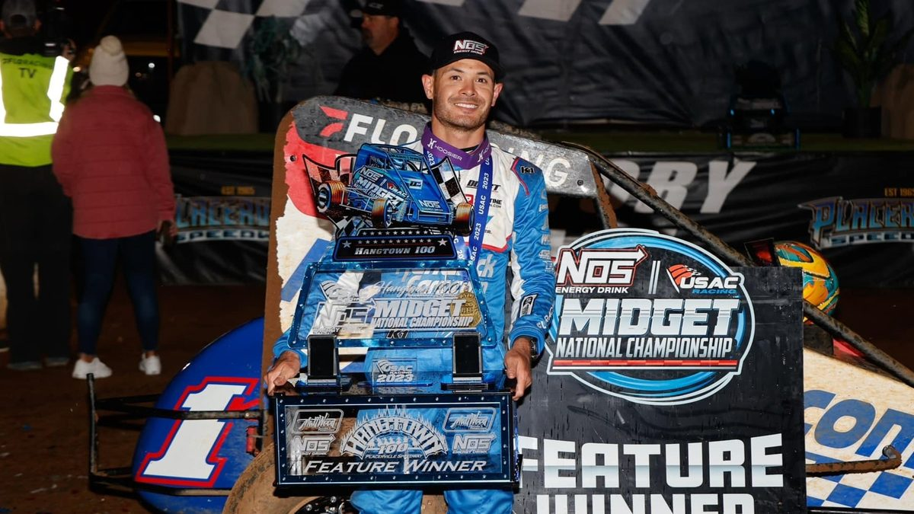
Preview · USAC Midgets · 360 SprintsKyle Larson to Race USAC Midgets and 360 Sprints at Hangtown 100
Update, Nov. 12: the Hangtown 100 was canceled because of forecast storms. Larson had been entered in USAC midgets and 360 sprints. Sources: FloRacing; TJ Slideways.
November 4, 2026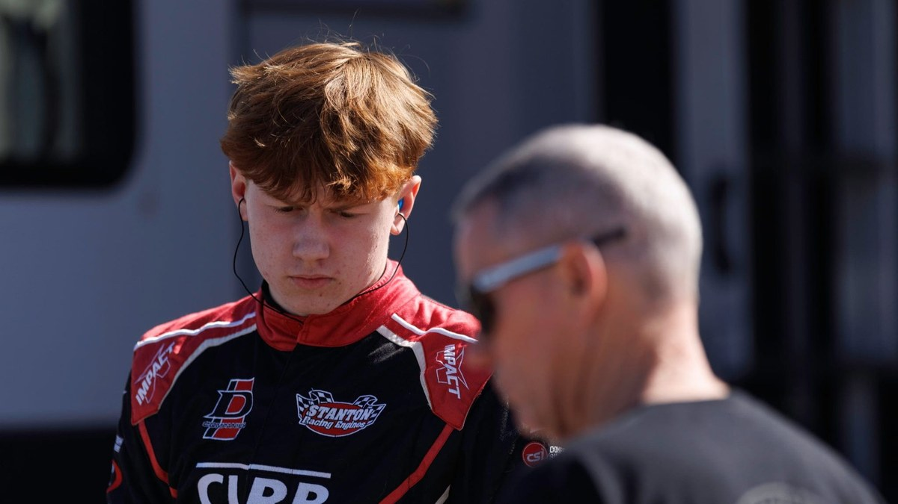
Award · USAC National SprintsCale Coons Named 2026 USAC National Sprint Car Rookie of the Year
Coons won once, finished 11th in points and led the series with 16 heat wins in a full 48-race debut. Source: USAC / FloRacing.
November 4, 2026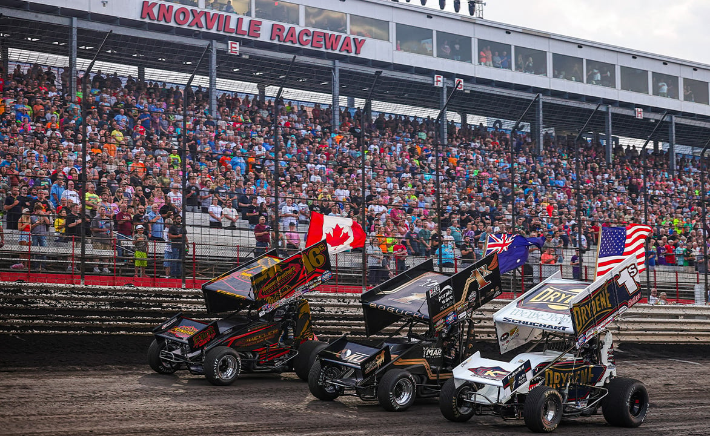
Team news · World of OutlawsKnoxville Raceway Extends Partnership with World of Outlaws, DIRTVision
Knoxville Raceway extended its sanctioning and streaming partnership with the World of Outlaws and DIRTVision through 2031. Source: World of Outlaws.
November 3, 2026 Preview · World of OutlawsGravel Eyes Historic Three-Peat at Charlotte World Finals
Gravel leads Michael Kofoid by 124 points entering the World Finals (Nov. 4-7) at The Dirt Track at Charlotte. Only Kinser, Schatz and Sweet have won three straight titles.
November 2, 2026 Results · New ZealandAllard Wins Season Opener at Baypark
Jonathan Allard won Baypark Speedway's season-opening meeting, holding off Dean Brindle by 0.893 seconds.
October 27, 2026 Results · 410 Sprint carsTanner Thorson Wins Trophy Cup Finale; Landon Brooks Takes Trophy Cup Title
Thorson won the 50-lap 410 A-main from 15th ($10,000). Landon Brooks finished 4th from 22nd to clinch the Trophy Cup 32 title ($30,000); Tanner Holmes won the Three Cup Challenge.
November 1, 2026 Weekly previewThis week: World of Outlaws World Finals decide the title at Charlotte
Gravel leads Kofoid by 124 points into four nights at Charlotte; POWRi, USCS and Top Gun close their seasons.
November 1, 2026 Results · 410 Sprint carsTanner Thorson Wins Trophy Cup Night 2 at Thunderbowl
Thorson won the 30-lap 410 feature from 4th after leader Kaleb Montgomery lost power on the last lap. Daison Pursley was second, D.J. Netto third.
October 31, 2026 Championship · World of OutlawsGravel, Big Game Motorsports Lead WoO Points Toward Third Straight Title
David Gravel leads Michael Kofoid by 124 points with only World Finals at Charlotte (Nov. 4-7) remaining. Source: World of Outlaws.
October 31, 2026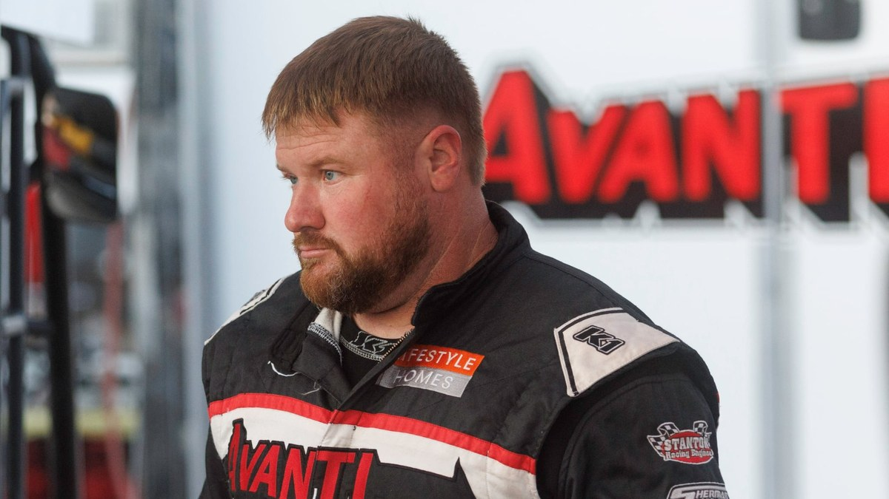
Championship · USAC CRA · Non-wingR.J. Johnson Wins Third Straight USAC CRA Sprint Car Title
Johnson won the 2026 USAC CRA Sprint Car championship, his third consecutive series title. Source: USAC.
October 31, 2026 Championship · High LimitAbreu Crowned 2026 High Limit Champion at Awards Celebration
Rico Abreu was honored in Fort Worth after finishing 31 points ahead of Giovanni Scelzi. Source: Dirt Track Digest.
October 31, 2026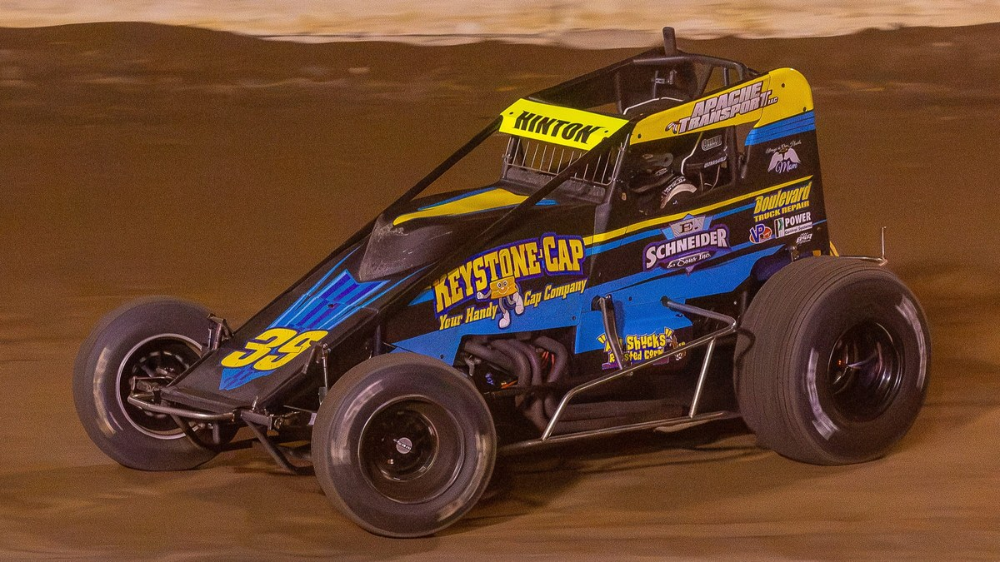
Results · USAC East CoastChelby Hinton Wins USAC East Coast Non-Winners Showdown at Bridgeport
Hinton won the 20-lap Malley Pool Water Non-Winners Showdown at Bridgeport Motorsports Park.
October 31, 2026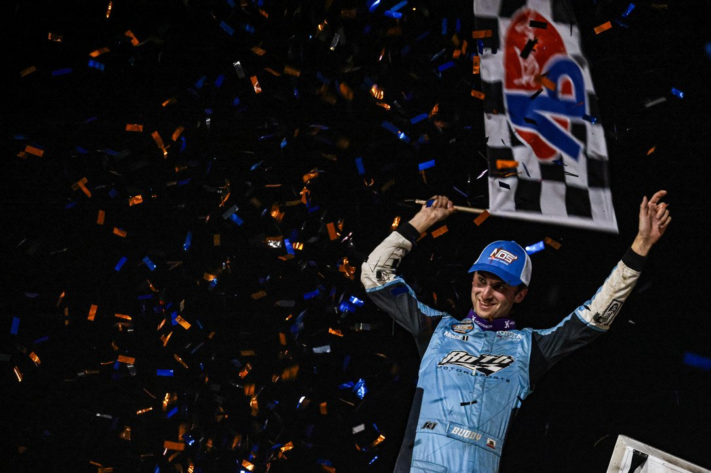
Results · World of OutlawsBuddy Kofoid Wins World of Outlaws Short Track Nationals at Texarkana
Kofoid won the 40-lap, $25,000-to-win Short Track Nationals at Texarkana 67 Speedway, his 17th World of Outlaws win of 2026.
October 31, 2026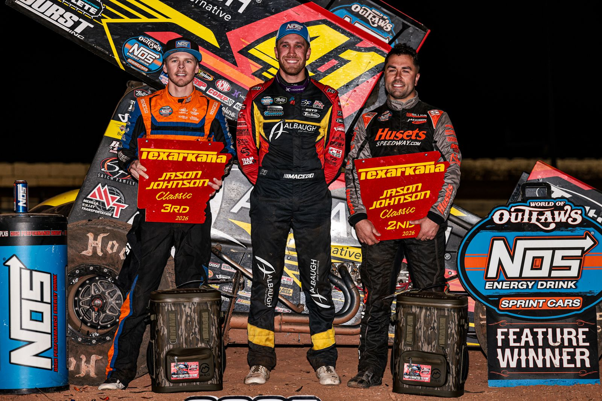
Results · World of OutlawsCarson Macedo Wins Jason Johnson Classic at Texarkana
Macedo won the 41-lap, $20,000 Jason Johnson Classic at Texarkana 67 Speedway in the Jason Johnson Racing No. 41.
October 31, 2026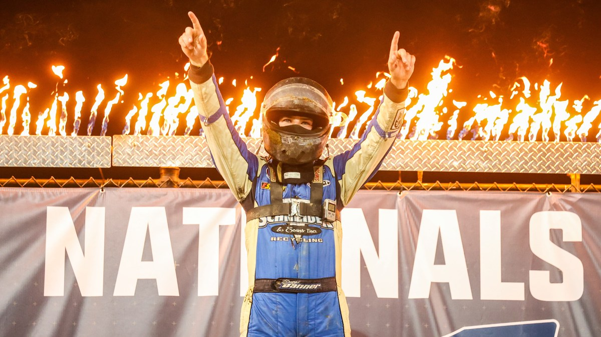
Team news · USACBriggs Danner Parts Ways with Hogue Racing After 2026
Danner leaves the No. 39 after the 2026 USAC season and is a free agent heading into 2027.
October 30, 2026 Results · 410 Sprint cars · Just inJustin Peck Wins Trophy Cup Night 1 at Thunderbowl
Peck took the lead on lap one from 4th and led all the way. Nights 2 and 3 are still to come.
October 30, 2026 Team news · High Limit · Just inKerry Madsen Lands Full-Time 2027 High Limit Ride in Dutcher #17GP
After finishing 2026 in the car, Madsen stays in the Michael Dutcher Motorsports #17GP for a full High Limit season.
October 30, 2026 Driver newsKaleb Johnson and TKS Motorsports set for 2027
Johnson goes full-time in the No. 2KS for Troy and Tammy Renfro, with Knoxville and Huset’s on the plan.
October 29, 2026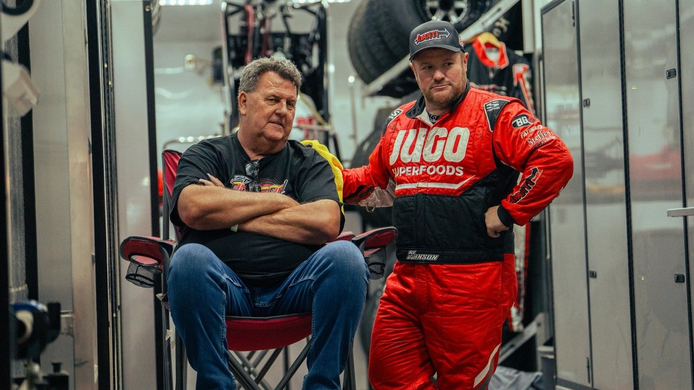
Team news · USACJerry Petty Steps Back After Back-to-Back Titles with Kyle Cummins
Petty Performance Racing’s national sprint car team won’t continue into 2027 after two straight USAC titles.
October 29, 2026 Championships2026 Series Champions Update + World Finals Preview
Abreu (High Limit) and Cummins (USAC) are champions; Gravel leads Kofoid by 124 into Charlotte.
October 29, 2026 Midget racingKeith Kunz Motorsports to close after 2026 season
Kunz announced the closure in an interview with DIRTVision and plans to join 4 Kings Racing.
Earlier Race recap · High LimitScelzi wins Texas finale, Abreu clinches High Limit title
Scelzi swept the finale weekend, but Abreu held off his late charge to win a second straight High Limit title.
October 20, 2026 Driver newsSilly season 2027: Will World of Outlaws drivers move to High Limit?
Brady Bacon is locked into the Vermeer 55 for 2027, and the bigger question is whether any World of Outlaws drivers follow him to High Limit.
October 20, 2026Showing stories from the last 7 days. More in the archive →
Upcoming race weekend
410 Sprint Cars · Sat, Nov 14
York Excavating Sprint Showdown, BAPS Motor Speedway
The $10,000-to-win 410 feature at York Haven, Pa., is scheduled for 3 p.m. ET, with pits and gates at noon and hot laps at 2 p.m. Source: BAPS Motor Speedway. The Gaerte Engines 360 season finale at Vado Speedway Park and the Tribute to Billy Shuman at Adobe Mountain Speedway are also still listed for Nov. 13-14. USAC National Midgets resume Nov. 18 at Plaza Park Raceway. Weekly preview.
No events match those filters yet. Try another series or discipline.
Dates from the series and track schedules. Check the official sites for start times and any changes.
Latest results
- Sprint car · World of Outlaws · Sat, Nov 7World Finals Finale, The Dirt Track at CharlotteCarson Macedo won the 25-lap feature from 8th ($25,000). Top 5: Macedo, Michael Kofoid, Giovanni Scelzi, Buddy Schweibinz, Steven Snyder Jr. Macedo led the final 9 laps. Chase Randall was the hard charger (+9).Full story →
- Sprint car · Sprint Car Challenge Tour · Sat, Nov 7Tribute to Gary Patterson, Stockton Dirt TrackD.J. Netto started second and won the finale. Top 5: Netto, Shane Golobic, Justyn Cox, Jake Morgan, Dylan Bloomfield. Cox clinched his second SCCT title. Officials shortened the feature to 25 laps.Full story →
- Sprint car · World of Outlaws · Fri, Nov 6World Finals Night 2 Feature, The Dirt Track at CharlotteGiovanni Scelzi led all 25 laps after passing polesitter Sheldon Haudenschild on the opening lap. Top 5: Scelzi, Tanner Holmes, Haudenschild, Cameron Smith, Buddy Schweibinz.Full story →
- Sprint car · World of Outlaws · Thu, Nov 5World Finals Night 1 Feature, The Dirt Track at CharlotteRico Abreu won the 25-lap feature from 3rd. Top 5: Abreu, Tyler Courtney, Bill Balog, Michael Kofoid, Garet Williamson. Williamson won the dash.Full story →
- Sprint car · World of Outlaws · Wed, Nov 4World Finals Qualifying, The Dirt Track at CharlotteRico Abreu swept both Simpson Quick Time awards (12.584 Thursday overall; 12.542 Friday Flight A). David Gravel topped Thursday Flight A (12.688); Sheldon Haudenschild led Friday Flight B (12.678).Full story →
- Sprint car · Trophy Cup · Sat, Oct 31Trophy Cup 32 Finale, Thunderbowl RacewayThorson won the 50-lap 410 A-main from 15th ($10,000). Landon Brooks finished 4th from 22nd to clinch the Trophy Cup 32 title ($30,000); Tanner Holmes won the Three Cup Challenge. Top 5: Thorson, Jett Barnes, Holmes, Brooks, Justin Peck.Full story →
- Sprint car · Trophy Cup · Fri, Oct 30Trophy Cup 32 Night 2, Thunderbowl RacewayTanner Thorson won the 30-lap 410 feature from 4th after leader Kaleb Montgomery lost power on the last lap. Daison Pursley second, D.J. Netto third.Full story →
- Sprint car · USAC East Coast · Fri, Oct 30Non-Winners Showdown, Bridgeport Motorsports ParkChelby Hinton won the 20-lap feature from 3rd for his first sprint car win. Kyle Spence second, Joe Kata third.Full story →
- Sprint car · Trophy Cup · Thu, Oct 29Trophy Cup 32 Night 1, Thunderbowl RacewayJustin Peck won the 30-lap 410 feature from 4th. Jace Park was second, Jake Andreotti third. Nights 2–3 on Oct 30–31.Full story →
- Sprint car · USAC · Sat, Oct 24Western World finale, Central Arizona RacewayGavin Miller won the 35-lap feature ($42,450), his second career USAC National Sprint win. Kevin Thomas Jr. was second, Justin Grant third.Full results via USAC →
- Sprint car · World of Outlaws · Sat, Oct 24Short Track Nationals, Texarkana 67 SpeedwayMichael Kofoid won the 40-lap feature on a late restart, his 17th win of 2026. Cole Macedo was second, Garet Williamson third.Full story →
- Sprint car · World of Outlaws · Fri, Oct 23Jason Johnson Classic, Texarkana 67 SpeedwayCarson Macedo won the 41-lap feature. David Gravel was second, Sheldon Haudenschild third.Full story →
- Sprint car · High Limit · Sat, Oct 17Season finale, Texas Motor Speedway dirtGiovanni Scelzi led all 30 laps and beat Rico Abreu by 0.202 seconds. Abreu clinched the series title.Full results via Speed Sport →
- Sprint car · USAC · Sat, Oct 17Bomb City 40, Route 66 Motor SpeedwayGavin Miller led all 40 laps. Cale Coons was second, Justin Grant third.Full results via USAC →
- Sprint car · All Star Circuit of Champions · Sat, Oct 3Frank & Marilyn Benic Memorial (season finale), Michaels Mercer RacewayA.J. Flick won the 35-lap feature from ninth ($11,000). Kalib Henry finished second to clinch his second straight All Stars title. Top 5: Flick, Henry, Zane DeVault, Dale Blaney, Cale Thomas.Full results via Speed Sport →
Wing sprint cars
Section →Scelzi wins Texas finale, Abreu clinches High Limit title
- Nov 13: USCS cancels 30th anniversary finale at Talladega Short Track
- Nov 13: D.J. Netto wins Tribute to Gary Patterson; Justyn Cox claims second SCCT title
- Nov 13: World of Outlaws set eight 2027 Pennsylvania dates, opening May 12 at Lincoln
- Nov 12: Sam Hafertepe Jr. wins record seventh ASCS National Tour title
- Nov 12: Australian Sprintcar Championship heads to Toowoomba Nov. 20-21
- Nov 10: Dayne Kingshott wins WA Sprintcar title at Bunbury
- Nov 10: From Speedcar champion to two-time WA Sprintcar champion: Dayne Kingshott’s rise with Krikke Motorsport
- Nov 10: Cole Macedo returning to TwoC Racing for 2027
- Nov 10: Emerson Axsom follows Chili Bowl win with World of Outlaws Rookie of the Year title
- Nov 9: Jason Martin healthy and open to driving or crew roles after DJ Bybee steps back
Midgets
Section →Keith Kunz Motorsports to close after 2026 season
- Nov 13: USAC Night of Champions set for Dec. 11 in Indianapolis
- Nov 12: Storms cancel Hangtown 100 at Placerville; USAC midgets resume Nov. 18 at Plaza Park
- Nov 12: Jacob Denney leads USAC National Midgets into five-race California finish
- Nov 12: Kale Drake wins 2026 POWRi National Midget League championship
- Nov 12: IndyCar winner Christian Rasmussen to make USAC midget debut at Turkey Night
- Nov 12: Broedy Graham wins 2026 USAC Western States Midget championship
- Nov 10: Tyler Nelson repeats as USAC Midwest Thunder SpeeD2 Midget champion
- Nov 10: Kyle Larson returns to Placerville with four Hangtown 100 wins and a co-promoter’s stake
- Nov 10: Daison Pursley won the last Hangtown 100 and is already a USAC Midget champion at 22
- Nov 9: Kaylee Bryson out at Abacus; team says it will be back in 2027
Non-wing sprint cars
Section →R.J. Johnson wins third straight USAC CRA Sprint Car title
- Nov 13: USAC Night of Champions set for Dec. 11 in Indianapolis
- Nov 12: Kyle Cummins wins second straight USAC National Sprint Car title
- Nov 10: Steven Drevicki wins sixth USAC East Coast Sprint Car title
- Nov 10: Jack Wagner wins 2026 USAC Wholesale Batteries MRA Sprint Car title
- Nov 9: Kaylee Bryson out at Abacus; team says it will be back in 2027
- Nov 8: Kody Swanson wins non-winged feature at Open Wheel Showdown
- Nov 6: Kyle Cummins seeking ownership partners for 2027 USAC return
- Oct 30: R.J. Johnson wins third straight USAC CRA Sprint Car title
This Day in History
Full archive →Past races and milestones on today’s date. History only; current news is above.
- Nov. 4, 1998 · World of OutlawsMark Kinser Wins Channellock Fall Classic at Las Vegas
- Nov. 4, 1945 · BirthdayKenny Weld Is Born in Kansas City
- See every date in This Day in History →
Racing links
Sites, shows and channels we follow. Not affiliated with us.About
I’ve been obsessed with sprint cars my whole life. I have the pictures to prove it: me in a diaper, “working” on a sprint car.
I’ve worked on them, traveled with them, and I’ve been to more races than I can count over the last four decades.
DirtSprintCars.com is independent. I built it to help feed my obsession, help people get good info quickly, and hopefully help the sprint car community grow: more eyes on the racing, the drivers, the teams and the people who keep it going every weekend.
And yes, I know midgets aren’t exactly sprint cars. I like them too, so deal with it.
Write or shoot for us
This sport is bigger than one guy with a website. If you write, take photos or shoot video, I want to hear from you.
Race recaps, driver features, track stories, photo galleries, local short-track coverage. Tell me what you do and send a link to your work. I’ll get back to you.
Tear Off Weekly
A quick roundup of dirt sprint car and midget racing news, results, schedules and stories worth following.
Race-night gear
Buying guides and original DirtSprintCars.com merchandise. Affiliate links are always disclosed.